Code
pp_check(anthropomorphization_model, type = "bars")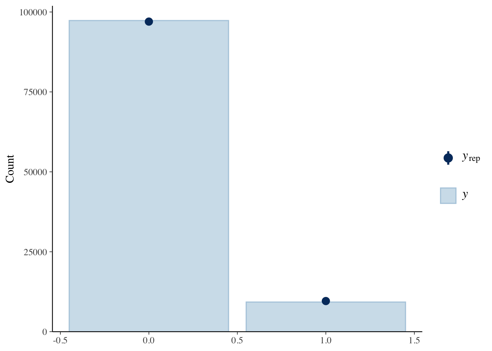
For three days thousands of people watched Claude play Pokémon while it tried to escape Mt. Moon. Bayesian regression analyses flagged false belief framing as the strongest single predictor of anthropomorphization. Using sparse autoencoders (SAEs) I extracted latent themes from ~107k of their messages. Then, using a BERTopic model, I discovered global topics and utilized a SAE for latent themes to see how viewers interpreted Claude when it showed signs of failure throughout the gameplay. I find viewers interpreted Claude as an entity that reasoned, forgot, looped, suffered, or needed protection—regardless of whether they truly believed it.
As a note, I do not mean to make it seem as any models mentioned are not approximating reasoning when speaking about them. It may be the case that through a different process they arrive at similar outputs as us, or, it may very well be they are using exact thing we’re doing to arrive at a similar conclusion. This is not what this report addresses. Henceforth, when I use ‘reasoning’ in quotes, it is merely to distinguish it from the human variant, simply because we cannot, at the current juncture, be sure that word is apt.
While previous work has shown it’s a natural phenomenon to project human qualities on non-human entities (Heider and Simmel 1944), LLMs present an added dimension: they talk like us, they respond like us, and research has begun to suggest, they may model the world like us (Lindsey et al. 2025).
On February 25th 2025, Anthropic released its newest Claude model: Sonnet 3.7; alongside their optional extended thinking mode. This was their first attempt at using the chain-of-thought (CoT) methods to bootstrap ‘reasoning’ (Anthropic 2025c; Wei et al. 2022). While this was their first model to employ the process (optionally) it was not the first model on the scene. OpenAI, months prior, released their o1 variant used supervised fine-tuning and reinforcement learning with human-feedback to teach the model chain-of-thought ‘reasoning’ (OpenAI 2024). Google had been working on the Gemini family of models for quite some time, and had just released their upgraded 2.0 Thinking variant (Pichai et al. 2024). Shortly after, DeepSeek’s R1 - employed reinforcement learning and group relative policy optimization with later fine-tuning on CoT examples (DeepSeek-AI et al. 2025). While the AI world had been busy benchmarking these models against one another, Sonnet 3.7 extended-thinking mode entered the scene.
Anthropic showed a unique benchmark - playing old-school Pokémon. During internal evaluations they found 3.7 was able to collect up to the third-badge whereas Sonnet 3.5 stalled out quite soon. A creatively fun, yet unique benchmark. Surprisingly, they also re-started the game and decided to broadcast it live 24/7 Claude Plays Pokémon on Twitch with its step-by-step reasoning for any viewer to see (Anthropic 2025a). This led to me wonder how others would think about the model’s ‘reasoning’. That is, in way what will people anthropomorphize the model over the course of the game? As it stands, anthropomorphizing typically happens in private when it comes to LLM, and there is hardly any data on large everyday prompts due to user privacy. While Anthropic does release reports on the types of questions being asked Claude (Anthropic 2025b), this lacks real-time anthropomorphizing, and the prompts themselves. This current dataset, while not being exact prompts to elicit feedback to the model (user messages are never shown to Claude as it plays), does show one-way interactive anthropormorphization. This was the first time, to my knowledge, observational data of this type could be siphoned and analyzed. This led to the hypothesis to start with: Given a message with characteristic X, from user Y, at time point Z, what’s the probability it contains anthropomorphization?
People have a baseline tendency to project human qualities to any and all entities. A new variant of large language models (LLMs) adds an additional layer of complexity to this well-studied finding. Contemporary models that are trained with step-by-step thinking result in chain-of-thought (CoT) traces (e.g., intermediate rationales, step-by-step explanations, and thought process summaries) that, alongside their output, make something akin to internal deliberation visible to the user. Current frameworks of anthropomorphization that are rooted in motivational and heuristic frameworks (Epley et al., 2007; Gray et al., 2007) treat mind attribution to non-human agents as a humanlike project that varies by situation. We argue this framing is incomplete for the new reasoning visible systems we have become inundated with. By using Bayesian Theory of Mind as an anchor (Baker et al., 2017), as well as its recent language-augmented extension (Ying et al., 2025), we propose that mind attribution to CoT visible systems may engage the same mentalizing machinery we utilize for humans. Our hypothesis is that an observer may treat visible reasoning traces as noisy evidence about what the LLM believes and then use that as evidence to infer its goals and competence, given some observable action. Three predictions distinguish this account from surface cue alternatives. First, anthropomorphization should track the type of failure the LLM shows. False belief errors (which separate competent but misinformed agents, from other failure modes) should provoke stronger mind attribution than capability or perceptual failures. Second, observer judgments of CoT should show a utility-calculus structure (joint reasoning over beliefs, desires, and costs) rather than uniform increases on a mind rating scale. Third, scrambled CoT that is matched on surface features but uninformative for belief state inference, should lead to weaker mind attribution than coherent CoT. We provide an extension of language-augmented BToM models incorporating token-based observations, which allows us to develop a framework with downstream predictions about trust calibration, blame attribution, and corrective behavior towards LLMs.
Humans have shown a tendency to attribute minds to many classes of entities. From non-human animals to inanimate objects, we often project human qualities immediately and often unconsciously (Heider & Simmel, 1944). With the existence of LLMs now being an everyday interaction for many, the question has transitioned from if this happens and now has become what kind of cognitive process produces this phenomenon. A new generation of LLMs makes the question more salient than ever. Reasoning model variants (OpenAI’s o-series, Anthropic’s Claude with extended thinking, DeepSeek R1, Google’s Gemini Thinking, etc.) output observable CoT traces alongside their answers. These traces differ from the CoT prompting technique proposed by Wei et al. (2022) in that they are output by models specifically trained to have an internal deliberation before responding. These CoT traces are often available to users to read separately from the final answer the model gives. Previous models would simply show users the final output (i.e., an artifact, an image, or a textual response). Now, users of these systems can see something that looks like the system thinking, through textual verbalizations, about what to do.
A unique case comes from Anthropic’s 2025 livestream of Claude playing Pokémon. Viewers tuned in, watched, and commented on Claude’s prowess while it displayed its reasoning for making decisions throughout its gameplay. It constantly used mentalizing language, attributing beliefs, revisions, and frustrations. A duration of significant interest was when it was stuck in a relatively simple maze for multiple days. Analyses of these data using LLM-annotations and Bayesian mixed-effects models revealed that when messages suggested the model held a false belief, those messages were significantly more likely to contain anthropomorphized language (IMNMV, 2026). This case motivates the question of this proposal. When LLMs narrative their reasoning, do observers respond to surface linguistic cues, or do they track belief states in a structured way?
The dominant frameworks of anthropomorphism explain why anthropomorphism happens and who does more of it, but they do not tackle the structure of the attribution itself. That is, do users attribute CoT to a goal? A belief? Competence? Uncertainty? Current models do not account for these questions. Three-factor theory (Epley, Waytz & Cacioppo, 2007) and the dimensional approach to mind perception (Gray, Gray & Wegner, 2007) treat mind attribution as a function of motivational and perceptual variables. They, however, do not predict the specific structural patterns we aim to explore. For example, should false belief failures produce more mind attribution than capability failures? Or, is it that the content of an LLM’s visible reasoning should matter more than surface cues? Reasoning models that show their CoT visibly offer a unique instance where these structural predictions are testable.
My intuition is that observers parsing the visible LLM reasoning may be using the cognitive machinery of mentalizing. The Bayesian Theory of Mind tradition, hereafter BToM (Baker, Saxe & Tenenbaum, 2009; Baker, Jara-Ettinger, Saxe & Tenenbaum, 2017) treats mind attribution as inverse planning. Observers infer an agent’s beliefs and goals by working backwards from observed actions. Recent work has extended this formalism to the natural language domain (Ying et al., 2025), where utterances are seen as noisy observations of the agent’s latent belief state which can be modeled. CoT tokens are an experimentally clean way of structuring noisy observations. That is, if observers are doing something with the structure of inverse planning when they read LLM reasoning, we should be able to detect qualitative fingerprints of that inference in how people respond to the reasoning of LLMs, and these fingerprints should differ from the predictions of surface level linguistic cues, as well as those that arise from generic assumptions about what machines can do.
Heider and Simmel’s (1944) landmark work showed that observers show a natural tendency to narrate motion patterns as social interaction. This powerfully robust phenomenon serves as the empirical basis for the modern literature and the current work. Turning to more contemporary models, a major theoretical framework stems from Epley et al. (2007)’s three-factor theory. Their theory suggests anthropomorphism works through agent knowledge, effectance motivation, and social motivation. This means that people anthropomorphize more often when it is easy to project human-like qualities onto a scenario, when those projections help them predict a situation, or when social connection is desired.
Waytz et al. (2010) expanded the framework with their Individual Differences in Anthropomorphism Questionnaire (IDAQ), which is a dispositional trait measure that measures stable individual differences. In another stream of work, Gray, Gray and Wegner (2007) ran a factor analysis on people’s perceptions of various minds (humans, animals, robots, gods, etc.) and found two underlying dimensions that explained the majority of the variance. 1) Agency (planning, memory, self-control), and 2) Experience (pain, pleasure, fear). Machines and robots are often granted agency-like capacities (e.g., planning or computation), but are denied experience capacities like pain or fear which points to a specific separation in moral attitudes toward machine decision-making (Bigman & Gray, 2018). Later refinements propose more than two dimensions, including body, heart, and mind dimensions (Weisman et al., 2017), and affect, moral regulation, and reality interaction (Malle, 2019).
Morewedge, Preston and Wegner (2007) showed that human-typical movement speeds elicit more mind attribution than faster or slower speeds of geometric shapes, pointing to a more perceptual cue based effect. This backs the idea that mind attribution can be triggered by simple perceptual cues that resemble human action, even independent of whether the stimulus triggers an inference process. When we connect this to reasoning traces, this predicts CoT may increase anthropomorphizing simply because it looks like thinking. That is, it contains first person language, hedging, uncertainty, revision, etc. Given this, an observer might not need to use inferential processes to understand its belief state, but instead respond to the perceptual aesthetics of the trace. This alternative view is necessary to control for because if scrambled CoT preserves these features then they should produce similar mind attribution as coherent CoT.
Perhaps it could be that mind attribution is the result of an inference computation? That is, it may be that observers reason from observed behavior to the most probable beliefs and desires that would have produced it. The contemporary version of this idea is BToM. People assume that other agents act roughly rationally to achieve their goals. Given what an agent does, an observer can work backwards to infer what the agent must have been trying to do. Baker et al. (2009) formalized this structure as action understanding as inverse planning over Markov decision processes. In other words, an agent with a goal selects actions that maximize expected utility for that goal. An observer who treats the agent as approximately rational can invert the process and recover the most probable goals from observed actions.
In later work, Baker et al. (2017) explored partially observable environments, where the agent’s beliefs and percepts are also unknown to the observer. The model performs joint inference over beliefs, desires, and percepts simultaneously, and reaches correlations of around r = 0.9 with human judgments on agent-navigation tasks. Participant judgments on these tasks track compositional Bayesian inference rather than the simpler structure that motion heuristics or surface cue processing would predict.
In a related area, Jara-Ettinger et al. (2016) proposed that people assume agents weigh the rewards of their goals against the costs of pursuing them. Simply by looking at how much effort an agent exerts, people can recover the agent’s beliefs, desires, competencies, and even moral character. Ho, Saxe, and Cushman (2022)’s work gives further evidence that Theory of Mind supports intervention planning, such as correcting or teaching another agent. This point becomes relevant to downstream predictions about corrective behavior we point to later in the discussion. Work has also shown that people reason differently about agents who appear to be planning their actions and agents who appear to be acting from habit (Gershman et al., 2016). In other words, when cues suggest behaviors are born from habit participants shift their predictions and explanations from planning based mental states (beliefs, desires, goals) toward habit based attributions and assign less moral blame to harmful actions inferred to be habitual. The distinction maps nicely onto the contrast between visible reasoning traces and LLM variants that do not display these traces.
More recently, a broadening of BToM addresses one of the framework’s structural gaps. That is, standard BToM assumes that the agent’s mental states are entirely unobservable and must be inferred from action alone. Ying et al. (2025) connects it to natural-language inputs by treating utterances as noisy output from latent belief states. The Language-Augmented Bayesian Theory of Mind (LaBToM) provides a likelihood channel where an agent’s verbalizations can update an observer’s posterior over the agent’s beliefs. This method was made with human dialogue and epistemic language in mind, but it generalizes naturally to LLM reasoning traces.
Work carried out by Pipitone et al. (2023) explored ToM in robots by giving a social robot overt inner speech, then letting it think aloud during a cooperative task. Participants who heard the robot’s reasoning rated it as livelier and more intelligent. As far as we are aware, this is the closest analog to a CoT manipulation in the literature that was found. Moreover, there are growing concerns of the faithfulness of CoT itself. Empirical work has demonstrated that CoT often fails to reflect the actual underlying computations driving model outputs (Turpin et al., 2023), and additional findings show models often omit task specific information in their reasoning trace that was used in the final output (Chen et al., 2025; Lindsey et al., 2025). We flag this because the present work treats CoT as evidence for observers, and not necessarily as faithful evidence of the model being internally and externally aligned.
Finally, the human-robot interaction (HRI) literature provides evidence that failure type and communication strategy shape how observers trust robots (Salem et al., 2015; Honig & Oron-Gilad, 2018; Roesler et al., 2023). However, these findings have yet to be extended to reasoning traces with LLMs.
First, I scraped the ClaudePlaysPokemon twitch chat by converting the messages, users, and time-stamps to a dataset. I then utilized the Gemini 2.0 Flash Thinking Experiment (01-21) model via the API to annotate 107k messages that spanned a three-day period. I was especially interested in the Mt. Moon Arc in which Claude was stuck in a relative simply maze for several days. I was curious to see how anthrpomorphization was impacted through this period. Would it decease? Increase? What patterns, if any, would it show? I used a 5 minutes sliding-window and provided chunks of messages within the prompt and asked it to rate each message on various dimensions (explained below). This was to give the model contextual awareness of the messages and avoid rating them independently of one another if it was not warranted. This led to several hundred windowed chunks which were analyzed (I ran the code quite a while ago and cannot remember the exact number of windows were made). Admittedly, this method is not perfect as I am sacrificing context on the boundaries of the messages at the beginning and end. Additionally, you may argue I was overloading the model with context and therefore possibly diminishing the annotation efficacy. Both are indeed important points to consider. However, I’d like to norm set and say this was a proof-of-concept method (and experiment overall).
I prompted Gemini with various dimensions to code a message for and relevant examples. It was told it could label a single message to multiple dimensions. For example, dimensions Chat Enthusiasm (representing enthusiastic messages), and Pokemon Evolved (representing messages relating to a pokemon evolving), could be be assigned to a single message such as “YES!!! LET’S GO! SQUIRTLE LEVELED UP!”
There were several dimensions I was uniquely interested in, several I wanted to explore based on the literature, and several that I thought would be interesting to collect. While there were 34 unique events annotated in total, I want to focus on 14 in particular within this report.
The 14 are:
I was curious to see if I could approximate two variables from (Baker et al. 2017) in which agents inferred the original mental states of agents after witnessing them perform an action. Because both pieces were available in this set up (the model made some action, reasoning about what it should do next, then made a new action), I was interested if this planning strategy induced anthropomorphization to any meaningful degree. This led to False_Belief and Belief_Update.
To understand how viewers interpreted Claude’s behavioral limitations, I included Getting_Stuck, Stuck_In_Loop, and Incorrect_Assumption - dimensions I was conceptually interested in exploring due to the high amount of failures Claude was running into and, as a result, if high amounts of blame were projected onto the model (Roesler et al. 2021; Cheng 2022).
The core anthropomorphization dimensions from (Epley et al. 2007) were operationalized as Anthro_Emotional (borrowing from (Gray et al. 2007)’s Experience dimension), Anthro_Cognitive (from (Gray et al. 2007)’s Agency dimension), Anthro_Intentional (following (Epley et al. 2007)’s work), and Anthro_Social from (Waytz et al. 2010)’s Individual Differences in Anthropomorphism Questionnaire.
Chat_Frustration, Chat_Enthusiasm, Chat_Meme, and Chat_Speculating were dimensions I was conceptually interested in capturing the broader chat dynamics around anthropomorphization. Collective_Theory_Building was aimed to better understand the dynamics of the chat and to see how people built theories around Claude’s behavior over time.
The annotated data was validated with a sample of 360 (20 for 10 the non-Anthro dimensions, 40 for Anthro dimensions) of these 107k events to see how well the LLM annotation matched what I would classify these messages as. To do this I either put 1 (the event it said the message fit into) if I agreed, or 0 if I disagreed. This yielded about a 76% alignment overall, with some dimemsions much more aligned than others.
Once basic exploratory data analysis was completed I fit Bayesian Mixed Effects Models with increasingly informative priors. To test their efficacy, I checked diagnostics, results, interpretability of each model, and model comparisons.
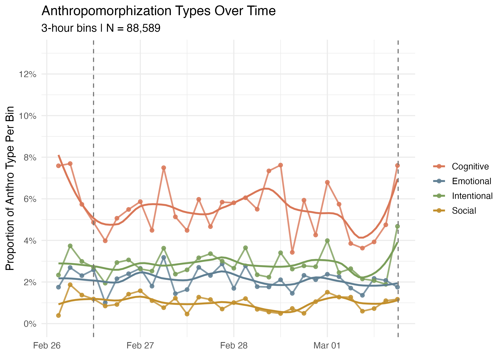
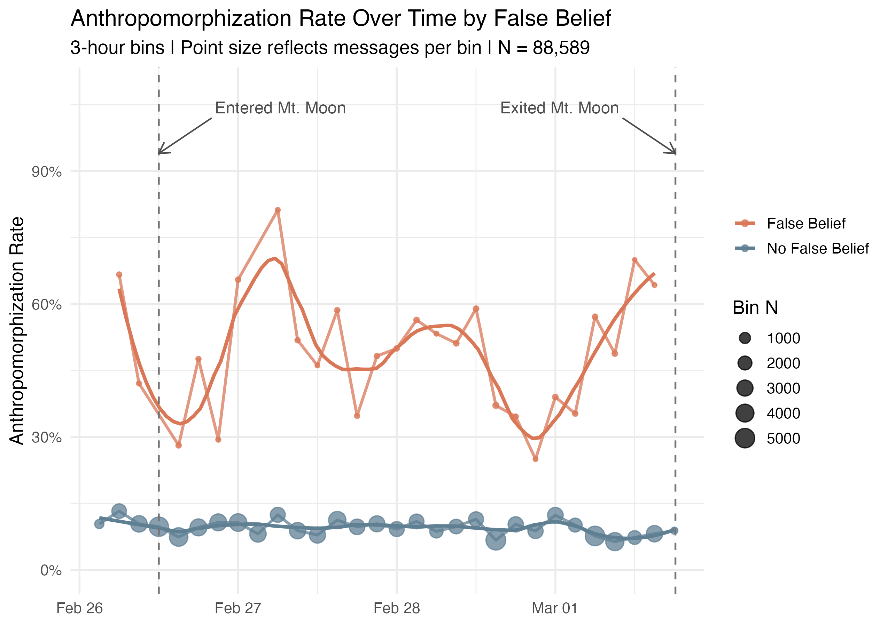
False_Belief were consistently more likely to also contain anthropomorphization than messages without that tag.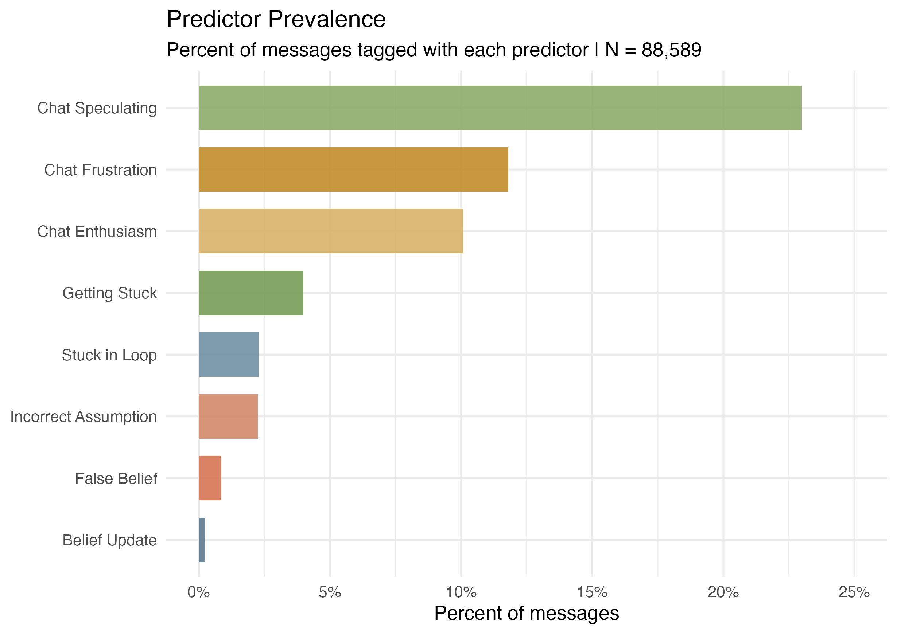
False_Belief was relatively rare in the full Mt. Moon subset, which makes its strong association with anthropomorphization notable.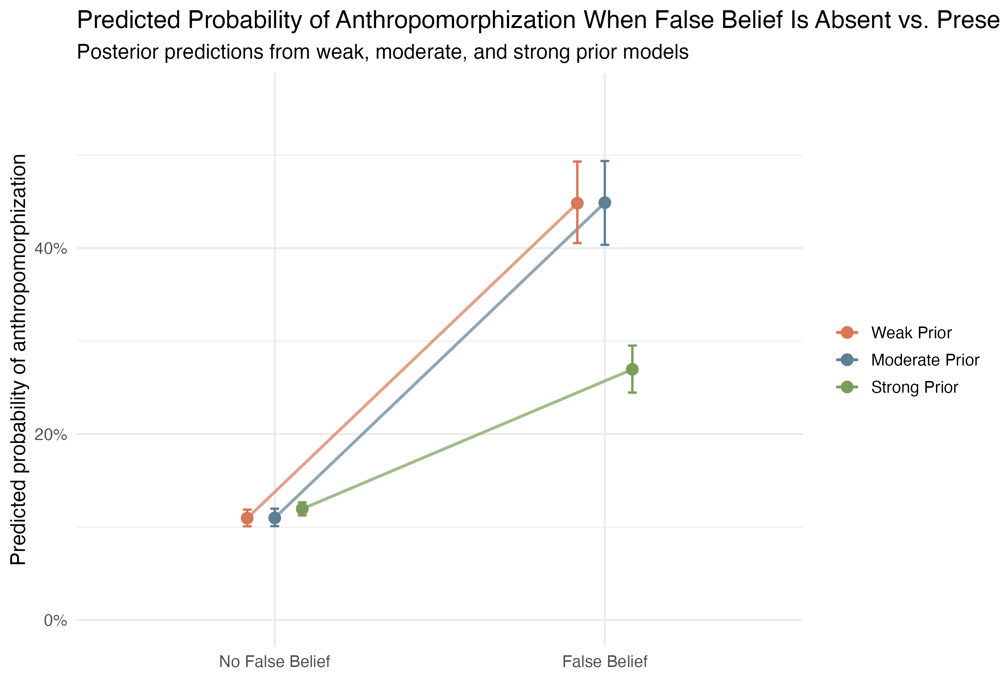
False_Belief had a substantially higher predicted probability of anthropomorphization.Given a message with characteristic X, from user Y, at time point Z, what’s the probability it contains anthropomorphization?
The goal of the model is to estimate a probability for each individual message, based on:
(Fixed Effects)
(Random Effects)
Additionally, given how exploratory this data is, I will be aiming for conservative claims.
pp_check(anthropomorphization_model, type = "bars")
Predicted counts are the dark blue circular bar. For 0 it seems to struggle a bit, but for 1 it sits right at the top, suggesting a good alignment with the observed data.
plot(anthropomorphization_model, plotfun = "dens")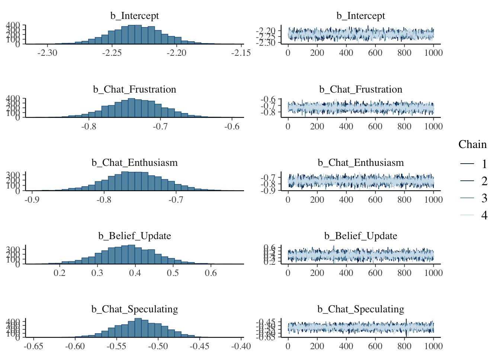
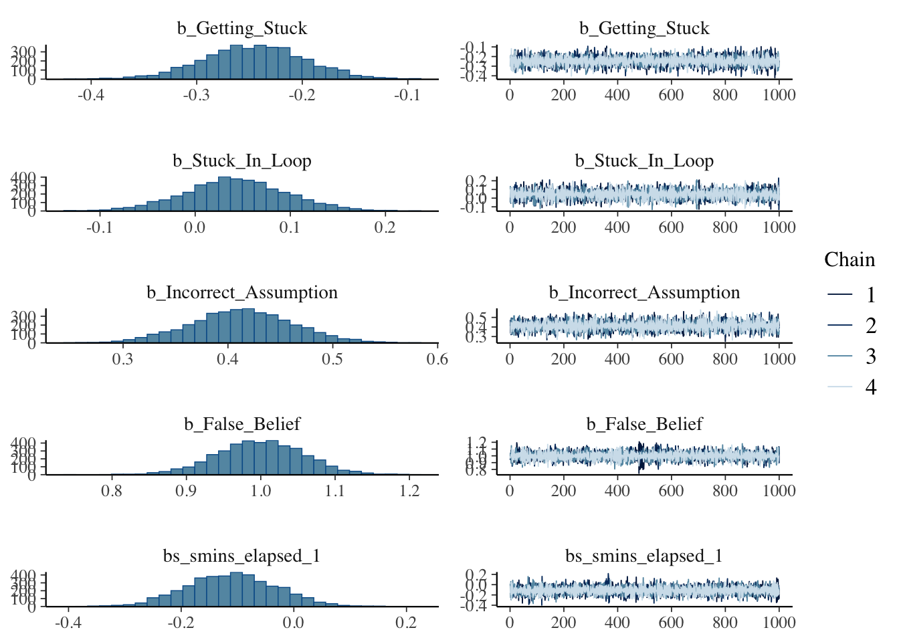
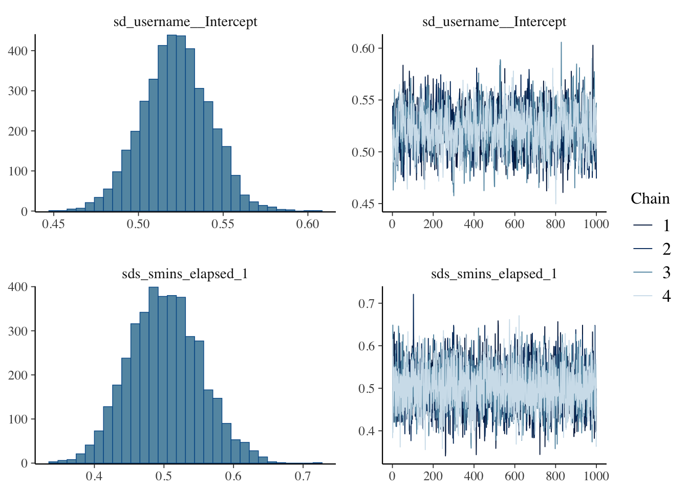
Good convergence and all posterior distributions look solid except for stuck in loop which lands squarely on 0. This means 0 will be inside our credible interval. More on that below.
model_parameters(anthropomorphization_model)# Fixed Effects
Parameter | Median | 95% CI | pd | Rhat | ESS
----------------------------------------------------------------------
(Intercept) | -2.23 | [-2.27, -2.19] | 100% | 1.000 | 2330
Chat_Frustration | -0.74 | [-0.81, -0.66] | 100% | 1.000 | 5828
Chat_Enthusiasm | -0.76 | [-0.84, -0.68] | 100% | 0.999 | 8770
Belief_Update | 0.38 | [ 0.23, 0.52] | 100% | 1.000 | 7944
Chat_Speculating | -0.52 | [-0.58, -0.47] | 100% | 1.000 | 8224
Getting_Stuck | -0.25 | [-0.34, -0.15] | 100% | 1.000 | 7128
Stuck_In_Loop | 0.04 | [-0.06, 0.15] | 79.62% | 1.000 | 8595
Incorrect_Assumption | 0.41 | [ 0.32, 0.51] | 100% | 1.000 | 7558
False_Belief | 1.00 | [ 0.88, 1.11] | 100% | 1.000 | 6399
smins_elapsed_1 | -0.11 | [-0.26, 0.04] | 91.55% | 0.999 | 7211Rhat values are at or less than 1 which supports solid convergence. Only Stuck in Loop passes through 0 in the CI suggesting we can’t trust this predictor to be meaningfully different from 0.
exp(fixef(anthropomorphization_model)) Estimate Est.Error Q2.5 Q97.5
Intercept 0.1073976 1.020814 0.1031067 0.1117833
Chat_Frustration 0.4795695 1.038594 0.4449255 0.5156731
Chat_Enthusiasm 0.4691177 1.041427 0.4324853 0.5073430
Belief_Update 1.4609357 1.076549 1.2602545 1.6861431
Chat_Speculating 0.5932978 1.028666 0.5612039 0.6258342
Getting_Stuck 0.7822589 1.049551 0.7103262 0.8575874
Stuck_In_Loop 1.0436122 1.055061 0.9388750 1.1600004
Incorrect_Assumption 1.5116397 1.049773 1.3740023 1.6612821
False_Belief 2.7169722 1.060505 2.4179939 3.0486445
smins_elapsed_1 0.8954188 1.083389 0.7698387 1.0443244With informative priors, False Belief increases the odds of anthropomorphization in a message by 2.7x (holding all other predictors constant) Belief Update messages increases the odds of an anthropomorphic message by 1.4x (holding all other predictors constant) Enthusiasm decreases the odds by 53% of a message containing anthropomorphization (holding all other predictors constant) Frustration decreases the odds by 52% of a message containing anthropomorphization (holding all other predictors constant)
Unintuitive at first, but this makes sense. Enthusiastic/Frustration were coded to NOT have anthro in them and when people were frustrated or enthusiastic they were simple messages like ‘dude…are you serious?’ or ‘lets gooooo’ Strangely, despite the poor accuracy for enthusiasm but high accurate for frustration - the mixed effects model did well picking some signal for both.
pd_results <- p_direction(anthropomorphization_model)
print(pd_results)Probability of Direction
Parameter | Function | pd
----------------------------------------
(Intercept) | | 100%
Chat_Frustration | | 100%
Chat_Enthusiasm | | 100%
Belief_Update | | 100%
Chat_Speculating | | 100%
Getting_Stuck | | 100%
Stuck_In_Loop | | 79.62%
Incorrect_Assumption | | 100%
False_Belief | | 100%
smins_elapsed_1 | smooth | 91.55%plot(pd_results)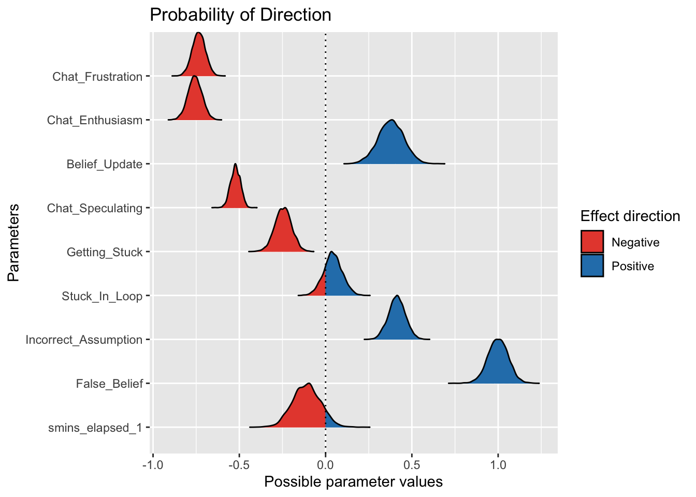
Direction of the effects look solid (except for Stuck in Loop, but this crossed the 0 credible interval which means we can ignore this as a credible parameter). We can trust that the directionality of the effects are meaningful.
big_rope_range <- c(-0.5, 0.5)
big_rope <- rope(anthropomorphization_model, ci = 0.95, range = big_rope_range)
plot(big_rope)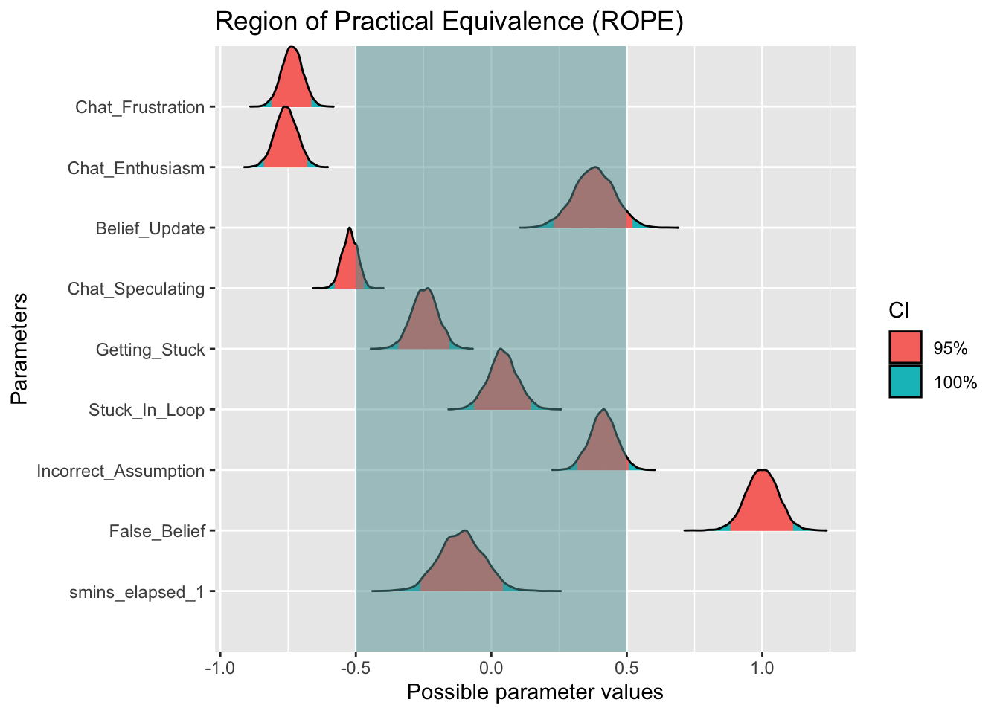
big_rope# Proportion of samples inside the ROPE [-0.50, 0.50]:
Parameter | Inside ROPE
----------------------------------
Intercept | 0.00 %
Chat_Frustration | 0.00 %
Chat_Enthusiasm | 0.00 %
Belief_Update | 97.16 %
Chat_Speculating | 21.97 %
Getting_Stuck | 100.00 %
Stuck_In_Loop | 100.00 %
Incorrect_Assumption | 98.71 %
False_Belief | 0.00 %
smins_elapsed_1 | 100.00 %The ROPE uses a standard deviation of +/- 0.5 from 0 to increase the odds we’re capturing meaningful effects. The majority of parameters fall into the ROPE this time, with only False Belief, Chat Frustration, and Chat Enthusiasm surviving. This suggests that these variables are indeed picking up some signal.
Overall, it seems False Belief, Frustration and Enthusiasm are the most credible findings.
key_predictors <- c("b_Chat_Frustration", "b_Chat_Enthusiasm", "b_False_Belief")
posterior_samples <- as_draws_matrix(anthropomorphization_model)
mcmc_areas(posterior_samples, pars = key_predictors, transformations = "exp")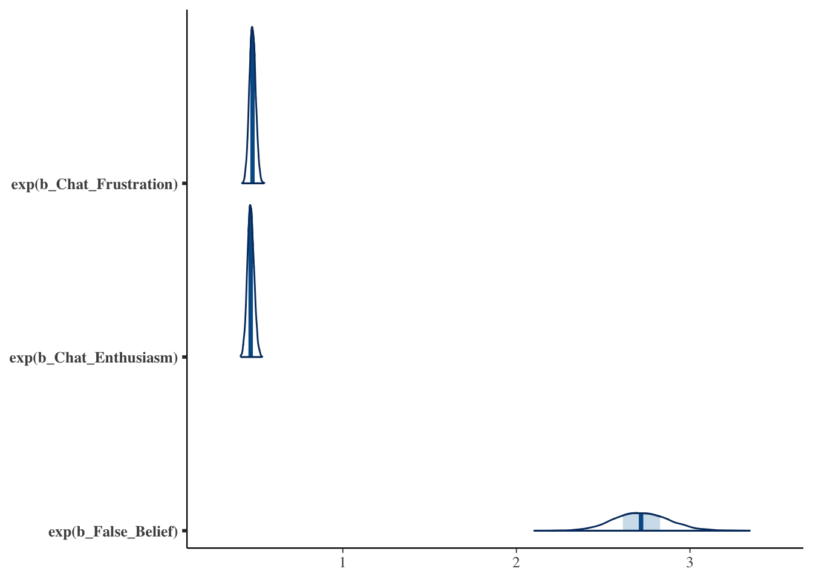
This means seeing Claude make false beliefs increases the probability that these users next message will be anthropomorphization, and a decrease for enthusiasm and frustration. Previous plots showed this, but we can see the shape of the distributions now. Chat variables have a tight distribution suggesting lower variance, whereas False Belief has a wider uncertainty distribution, and thus more variance.
plot(conditional_effects(anthropomorphization_model, effects = c("Chat_Frustration", "Chat_Enthusiasm", "False_Belief")), points = TRUE, theme = theme_minimal())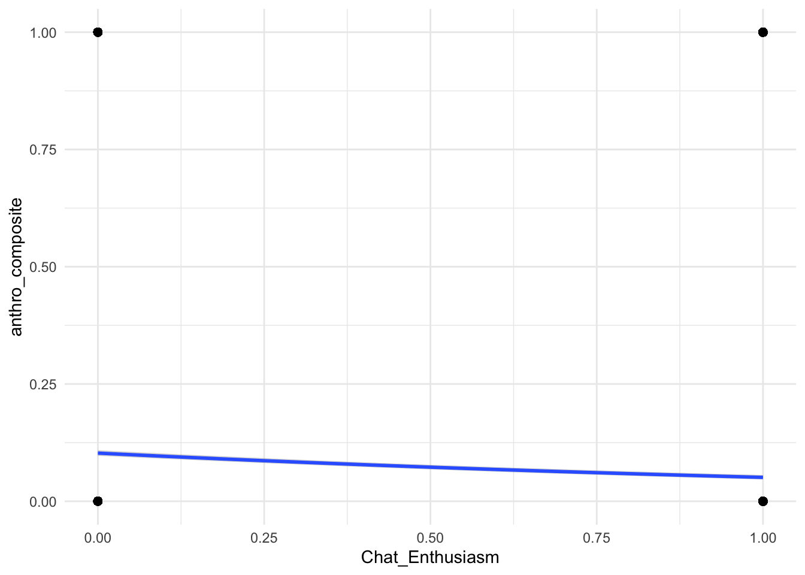
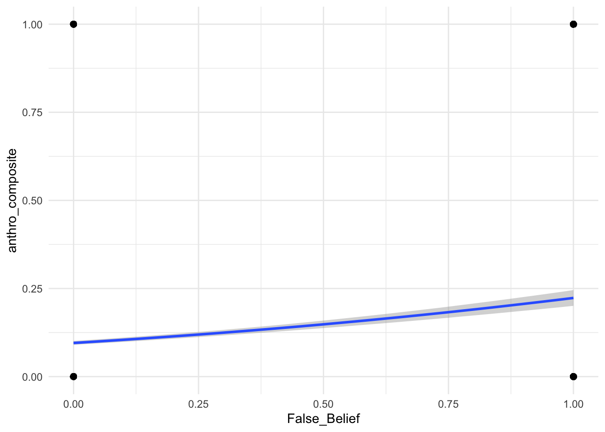
Arguably, these are the most important plots. We see now that despite previous statistical credibility, the practicality of Enthusiasm and Frustration are weak.
False Belief, however, shows more a meaningful practical effect. Not Nobel worthy, but good evidence that False Belief is the best predictor to support the hypothesis.
Importantly, I need to check Bayes Factor.
weak_bf_modelBayes Factor (Savage-Dickey density ratio)
Parameter | Function | BF
-------------------------------------------
(Intercept) | | 1.09e+114
Chat_Frustration | | 5.71e+19
Chat_Enthusiasm | | 2.06e+17
Belief_Update | | 1.72e+12
Chat_Speculating | | 8.44e+17
Getting_Stuck | | 2.51e+03
Stuck_In_Loop | | 0.102
Incorrect_Assumption | | 6.54e+05
False_Belief | | 1.91e+29
smins_elapsed_1 | smooth | 1.32e+08
* Evidence Against The Null: 0plot(weak_bf_model)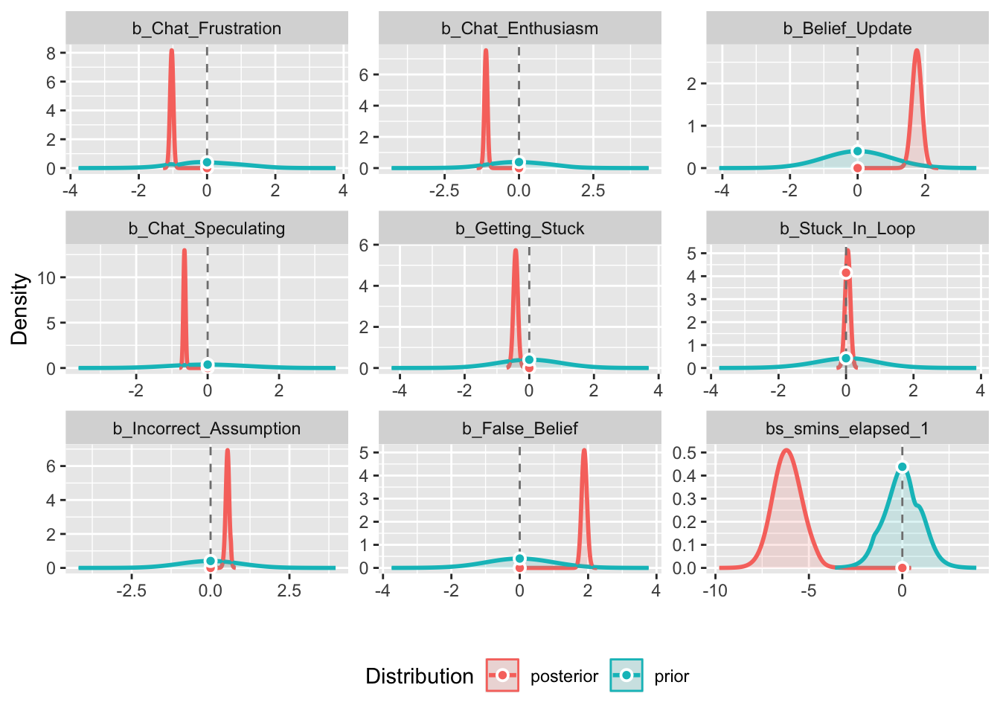
mod_bf_modelBayes Factor (Savage-Dickey density ratio)
Parameter | Function | BF
------------------------------------------
(Intercept) | | 2.15e+94
Chat_Frustration | | 1.20e+19
Chat_Enthusiasm | | 1.66e+24
Belief_Update | | 2.19e+08
Chat_Speculating | | 1.16e+17
Getting_Stuck | | 3.64e+04
Stuck_In_Loop | | 0.093
Incorrect_Assumption | | 2.42e+07
False_Belief | | 2.75e+21
smins_elapsed_1 | smooth | 3.02e+06
* Evidence Against The Null: 0plot(mod_bf_model)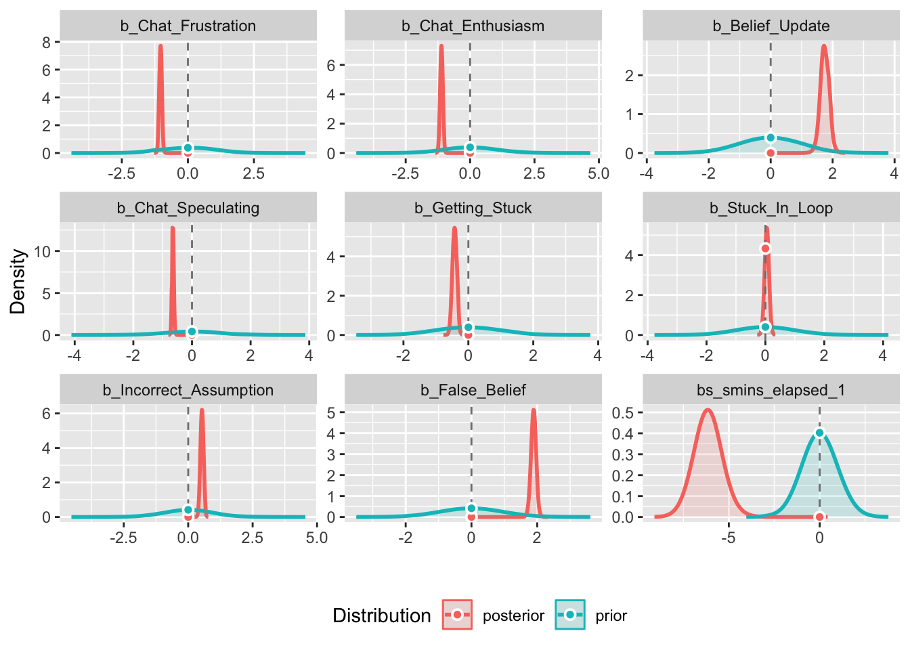
main_bf_modelBayes Factor (Savage-Dickey density ratio)
Parameter | Function | BF
-------------------------------------------
(Intercept) | | 6.10e+127
Chat_Frustration | | 2.13e+19
Chat_Enthusiasm | | 9.59e+18
Belief_Update | | 1.11e+04
Chat_Speculating | | 3.21e+20
Getting_Stuck | | 1.80e+04
Stuck_In_Loop | | 0.966
Incorrect_Assumption | | 1.53e+09
False_Belief | | 5.82e+18
smins_elapsed_1 | smooth | 2.36
* Evidence Against The Null: 0plot(main_bf_model)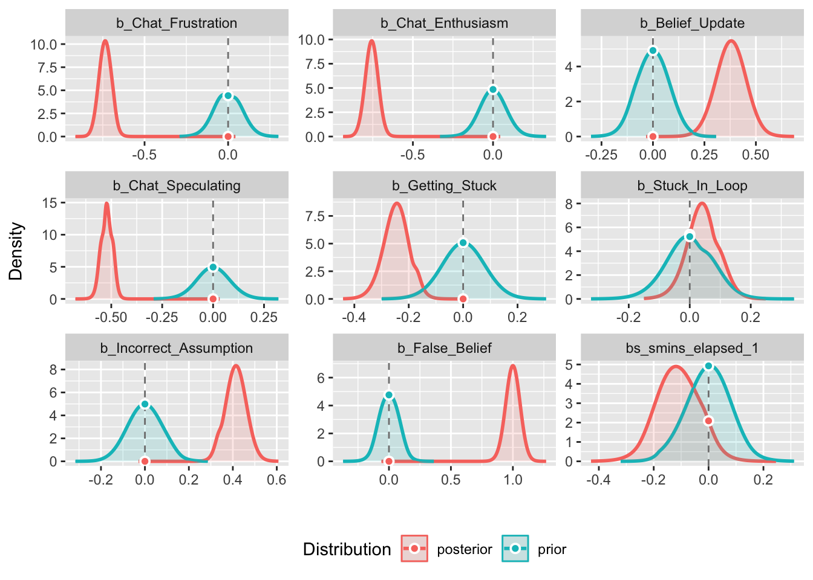
Here I compare 3 Bayesian models (weak, moderate and informative priors). Their respective means were 0, and standard deviations as 1, .5, and .08, respectively.
Again, stuck in loop, again, shows practically no effect.
Across all 3 models s mins elapsed shrinks a lot by the time it reaches the main model, suggesting the weaker/mod priors were doing a lot of heavy lifting, and now that we’re forcing the data to speak for itself, it’s not holding up. We can see this in the plot where it almost entirely overlaps. Belief update shrunk as priors increased, but it seems like a strong effect across all 3.
The rest seem to hold up across increasing priors suggesting the prior values are doing some heavy lifting in the earlier models, but are modeling and underlying effect.
Now, since we have three models, we need to check comparisons.
loo_compare(loo_weak, loo_mod, loo_strong) elpd_diff se_diff
moderate_anthropomorphization_model 0.0 0.0
weak_anthropomorphization_model -1.1 0.6
anthropomorphization_model -279.4 21.9 waic_comparison <- loo_compare(waic_weak, waic_mod, waic_strong)
print(waic_comparison) elpd_diff se_diff
moderate_anthropomorphization_model 0.0 0.0
weak_anthropomorphization_model -1.1 0.6
anthropomorphization_model -279.8 21.9 print(r2_weak)# Bayesian R2 with Compatibility Interval
Conditional R2: 0.067 (95% CI [0.063, 0.071])
Marginal R2: 0.030 (95% CI [0.027, 0.033])print(r2_mod)# Bayesian R2 with Compatibility Interval
Conditional R2: 0.067 (95% CI [0.062, 0.071])
Marginal R2: 0.030 (95% CI [0.027, 0.034])print(r2_strong)# Bayesian R2 with Compatibility Interval
Conditional R2: 0.044 (95% CI [0.041, 0.048])
Marginal R2: 0.016 (95% CI [0.015, 0.018])The moderate model is the best in this comparison but not that different from the weakest prior variant. It also does a better job explaining the variance than the main model (7% compared to 4%). The model we have been looking at is quite poor! For an exploratory analysis this is important information to know and gives a solid starting point for the next analysis (not covered here). Given the issue with this model I’ll skip the cross validation for length purposes and because the insights would be uninformative due to the extremely high false positive rate.
To sum things up, it seems as though for a Given message X, for user Y, at time Z, the best predictor of a message containing anthropormorphic features was when the message pertained to Claude having a false belief. That is, having a false belief increased the odds of the message being anthropomorphized by 2.7x. Messages with enthusiasm and frustration decreased the odds of them having anthropomorphization by ~50%.
Overall, this is a good first step, but if I want to model anthropomorphization based on these data, I need to tease apart the data more.
Originally I ran Bayesian regression models to investigate what features best predicted anthropomorphic messages (false belief was the big one). But recently at a symposium, Aakriti Kumar (whose presented work was excellent) mentioned that sparse autoencoders (SAEs) worked better for her project than BERTopic models. I knew vaguely about SAEs from mechanistic interpretability work around LLMs, but never thought to apply them to standard text analysis.
With the annotated dataset I could then ask: when people collectively anthropomorphize an LLM showing its reasoning trace—what are they actually doing? That is, I did not simply want to ask, “do they call it a he” or “do they say it thinks” (although I did explore those questions), but instead I was more curious to find what psychological frames they used when the models succeeded, failed, looped, forgot due to context compaction, or when it seemed stuck.
Given my interest in topic modeling, and my desire to improve my chops in computational text analysis, I decided to give them a shot. To give an intuitive example, as I understand them, they are a way to take embeddings and reconstruct them by balancing two constraints: (1) reconstruct the original embedding as best as possible, and (2) use a small number of active features to do this.
For example, imagine writing an essay. The essay can then be described through numerous short tags like “argumentative”, “personal anecdote”, “formal exploration”, “moral appeal”, etc. Then, instead of saving every word of the essay, SAE represents the essay’s embedding as a combination of a few of those tags. The goal is to keep enough information to reconstruct the original embedding while at the same time making the representation more interpretable.
I used Qwen’s 8B-parameter embedding model to convert my dataset to embeddings, then used SAEs to identify recurring frames in how people interpreted Claude’s behavior to get more granular frames. To achieve an interpretable number of features (26), I only retained those that were adequately present, stable across random seeds, and coherent in their top activation examples. I then had Gemini 3.1 Pro annotate random subsets of the top activations to assign the unique frames their own categorical label.
To my surprise, it worked quite well, and some really neat patterns shook out.
First, initially I used Gemini to annotate four different types of anthropomorphic projection (cognitive, emotional, intentional and social). However, the latent frames that emerged from the SAE showed that people anthropomorphized in a variety of ways. For example, reacting to Claude’s <thinking> traces, projecting an explorer archetype onto it, giving it emotional support / pitying it when it was stuck, as well as even projecting affection when it did cute things such as name its Pokémon. The viewers gave it a wide variety of mind-attributions that my simplistic global labels failed to capture.
The first image shows the SAE latent thematic frames that are most strongly associated with the Gemini-coded anthropomorphic messages. Each point is an odds ratio from a logistic regression predicting whether a chat message was labeled anthropomorphic while controlling for message length, word count, and time. Error bars show 95% confidence intervals, and p-values were corrected using FDR correction.

What I find most interesting about this plot is that we can see specific frames of language show more variation than simple global labels would describe. For example, there were a lot of discussions/banter about Claude’s <thinking> trace (which was displayed on the screen before it reasoned via text), projections where Claude is an explorer in a new world forging a path, or projection of pity when it showed signs of confusion with its inability to make significant progress in the maze. Or, put another way, the SAE split anthropomorphism into cleaner interpretive frames than my global annotation categories.
Second, false-belief events changed the type of anthropomorphic projection people applied. I was interested in false-belief messages because work by Baker et al. (2017) suggests that observers explain agents’ actions by inferring what the agent represents/believes about the world. These events, which were coded by Gemini 1.5 Pro, occurred when viewers interpreted Claude’s behavior as a misunderstanding of the game state. Given that Claude’s actions were constrained by the constant context distillation, as well as its poor image understanding capabilities, I thought this would be a prime candidate for mind-attribution.
The second image asks, of the various SAE frames, which were strongly associated with events where viewers believed Claude acted from a false belief? An earlier analysis showed false belief as the strongest predictor of any anthropomorphic language, but I wasn’t able to understand what ways people spoke about false beliefs when they happened. Like before, each point is an odds ratio from a logistic regression predicting whether a message occurred in a false-belief context, while controlling for message length, word count, and time. Error bars show 95% confidence intervals, and p-values were corrected using FDR correction.

We can see that when Claude failed, the most consistent themes drifted from the generic affection-aligned responses from the previous analysis. Instead these were geared toward how people spoke about Claude’s reasoning ability, the consistent looping and its awareness that it was looping but still unable to correct itself, and how, despite its impressive capabilities, its amnestic ceiling crippled its ability to progress.
Third, I wanted to map these results onto the classic agency vs. experience dimensions. This part of the analysis is the most qualitative, and open to interpretation, but bear with me. Gemini 3.1 Pro via the Gemini CLI mapped the 26 SAE themes to the amount of agency and experience they exhibited on a 1–5 scale, where higher values indicated more of that dimension. For example, Gemini rated ascribed intelligence at a 5.0 on agency but 1.0 on experience, putting it in the bottom right quadrant of the third image. In an ideal world, one would run these multiple times with multiple models alongside human raters, but given this was a fun little exploration, this will do just fine. In this corpus, Claude’s failures were, descriptively, associated with less affection-based responses and more geared toward framing it from an agency/process lens, with the most prominent being reasoning, looping, analyzing its decision process and overall goal intention. The x-axis represents perceived agency (e.g., planning, reasoning, intention, control, and competence). The y-axis represents perceived experience (e.g., feeling, vulnerability, suffering, affection, etc.).

And, finally, I wanted to compare SAE frames with BERT-derived topics. After looking at the top clusters BERT found, I included the SAE results to show the difference in granularity each method provides. SAE gave what psychological frames appeared within the semantic topics. That is, the same gameplay topic could also contain people talking about amnesia framing, Sisyphus framing (i.e., Claude must imagine itself to be the type of model to overcome the boulder, lol), goal-directed intent, or pity towards its failures. Therefore, the overall semantic topic tells us what the chat was talking about, but, to go one level deeper, the SAEs reveal how the chat was construing their perceptions of Claude.
The last image compares a BERTopic model’s topic outputs alongside the SAE outputs. BERTopic was run on the same Qwen embeddings and the highest prevalent semantic topics that were found were Claude (e.g., literally people saying Claude’s name), Mt. Moon (the three-day maze it was in), Zubats (which are an extremely frequent encounter in Mt. Moon), AGI (mostly meant as a meme), and Fossils (you receive one at the end of the maze). Within each BERTopic-defined topic, I calculated how common each SAE frame was relative to its corpus-specific baseline. The x-axis shows relative prevalence vs. the corpus baseline. A value of 1 means the frame appears at the expected rate, whereas values above 1 mean the frame is more common inside that BERTopic than expected. This dualistic framing lets us see clearly what both approaches offer. BERTopic identified what topics the chat talked about at a high level, whereas SAE identified how viewers were psychologically construing Claude inside those topics, as the same semantic topic could contain multiple psychological frames.

Anthropomorphism is a default way we attribute mind qualities to all classes of entities. This much is known and is well-trodden within the field. What I find more interesting is that the anthropomorphism was structured, and this structure can be teased apart with textual and regression analyses that current explorations in the field haven’t done. We saw that viewers projected different mind-attribution frames depending on what Claude was doing, and how successful it was. When Claude failed, people then attempted to explain/understand these failures through agency/process frames. On the other hand, BERTopic helped identify the global semantic context throughout its gameplay, but SAE helped identify the psychological construals within those contexts.
The de-identified annotated dataset is available here: github.com/IMNMV/Claude-Plays-Pokemon.
Baker, C. L., Saxe, R., & Tenenbaum, J. B. (2009). Action understanding as inverse planning. Cognition, 113(3), 329–349. https://doi.org/10.1016/j.cognition.2009.07.005
Baker, C. L., Jara-Ettinger, J., Saxe, R., & Tenenbaum, J. B. (2017). Rational quantitative attribution of beliefs, desires and percepts in human mentalizing. Nature Human Behaviour, 1, Article 0064. https://doi.org/10.1038/s41562-017-0064
Bigman, Y. E., & Gray, K. (2018). People are averse to machines making moral decisions. Cognition, 181, 21–34. https://doi.org/10.1016/j.cognition.2018.08.003
Chen, Y., Benton, J., Radhakrishnan, A., Uesato, J., Denison, C., Schulman, J., Somani, A., Hase, P., Wagner, M., Roger, F., Mikulik, V., Bowman, S., Leike, J., Kaplan, J., & Perez, E. (2025). Reasoning models don’t always say what they think. Anthropic.
Cohn, M., Pushkarna, M., Olanubi, G. O., Moran, J. M., Padgett, D., Mengesha, Z., & Heldreth, C. (2024). Believing anthropomorphism: Examining the role of anthropomorphic cues on trust in large language models. In Extended Abstracts of the CHI Conference on Human Factors in Computing Systems (Article 54, pp. 1–15). Association for Computing Machinery. https://doi.org/10.1145/3613905.3650818
Epley, N., Waytz, A., & Cacioppo, J. T. (2007). On seeing human: A three-factor theory of anthropomorphism. Psychological Review, 114(4), 864–886. https://doi.org/10.1037/0033-295X.114.4.864
Gershman, S. J., Gerstenberg, T., Baker, C. L., & Cushman, F. A. (2016). Plans, habits, and theory of mind. PLOS ONE, 11(9), e0162246. https://doi.org/10.1371/journal.pone.0162246
Gray, H. M., Gray, K., & Wegner, D. M. (2007). Dimensions of mind perception. Science, 315(5812), 619. https://doi.org/10.1126/science.1134475
Heider, F., & Simmel, M. (1944). An experimental study of apparent behavior. The American Journal of Psychology, 57(2), 243–259. https://doi.org/10.2307/1416950
Ho, M. K., Saxe, R., & Cushman, F. (2022). Planning with theory of mind. Trends in Cognitive Sciences, 26(11), 959–971. https://doi.org/10.1016/j.tics.2022.08.003
Honig, S., & Oron-Gilad, T. (2018). Understanding and resolving failures in human-robot interaction: Literature review and model development. Frontiers in Psychology, 9, Article 861. https://doi.org/10.3389/fpsyg.2018.00861
IMNMV. (2026). Claude-Plays-Pokemon: A first step into collective anthropomorphization [Data set and code repository]. GitHub. https://github.com/IMNMV/Claude-Plays-Pokemon
Jara-Ettinger, J., Gweon, H., Schulz, L. E., & Tenenbaum, J. B. (2016). The naïve utility calculus: Computational principles underlying commonsense psychology. Trends in Cognitive Sciences, 20(8), 589–604. https://doi.org/10.1016/j.tics.2016.05.011
Malle, B. F. (2019). How many dimensions of mind perception really are there? In A. K. Goel, C. M. Seifert, & C. Freksa (Eds.), Proceedings of the 41st Annual Meeting of the Cognitive Science Society (pp. 2268–2274). Cognitive Science Society.
Morewedge, C. K., Preston, J., & Wegner, D. M. (2007). Timescale bias in the attribution of mind. Journal of Personality and Social Psychology, 93(1), 1–11. https://doi.org/10.1037/0022-3514.93.1.1
Onnasch, L., & Roesler, E. (2021). A taxonomy to structure and analyze human–robot interaction. International Journal of Social Robotics, 13(4), 833–849. https://doi.org/10.1007/s12369-020-00666-5
Pataranutaporn, P., Liu, R., Finn, E. et al. Influencing human–AI interaction by priming beliefs about AI can increase perceived trustworthiness, empathy and effectiveness. Nat Mach Intell 5, 1076–1086 (2023). https://doi.org/10.1038/s42256-023-00720-7
Pipitone, A., Geraci, A., D’Amico, A., Seidita, V., & Chella, A. (2023). Robot’s Inner Speech Effects on Human Trust and Anthropomorphism. International Journal of Social Robotics, 1–13. Advance online publication. https://doi.org/10.1007/s12369-023-01002-3
Reeves, B., & Nass, C. (1996). The media equation: How people treat computers, television, and new media like real people and places. Cambridge University Press.
Roesler, E., Manzey, D., & Onnasch, L. (2023). The dynamics of human–robot trust attitude and behavior—Exploring the effects of anthropomorphism and type of failure. Computers in Human Behavior, 146, 107790.
Sah, Y. J., & Peng, W. (2015). Effects of visual and linguistic anthropomorphic cues on social perception, self-awareness, and information disclosure in a health website. Computers in Human Behavior, 45, 392–401.
Salem, M., Lakatos, G., Amirabdollahian, F., & Dautenhahn, K. (2015). Would you trust a (faulty) robot? Effects of error, task type and personality on human-robot cooperation and trust. In Proceedings of the Tenth Annual ACM/IEEE International Conference on Human-Robot Interaction (pp. 141–148). ACM. https://doi.org/10.1145/2696454.2696497
Sundar, S. S. (2008). The MAIN model: A heuristic approach to understanding technology effects on credibility. In M. J. Metzger & A. J. Flanagin (Eds.), Digital media, youth, and credibility (pp. 73–100). MIT Press.
Turpin, M., Michael, J., Perez, E., & Bowman, S. R. (2023). Language models don’t always say what they think: Unfaithful explanations in chain-of-thought prompting. In Advances in Neural Information Processing Systems, 36.
Waytz, A., Cacioppo, J., & Epley, N. (2010). Who sees human? The stability and importance of individual differences in anthropomorphism. Perspectives on Psychological Science, 5(3), 219–232. https://doi.org/10.1177/1745691610369336
Waytz, A., Heafner, J., & Epley, N. (2014). The mind in the machine: Anthropomorphism increases trust in an autonomous vehicle. Journal of Experimental Social Psychology, 52, 113–117. https://doi.org/10.1016/j.jesp.2014.01.005
Wei, J., Wang, X., Schuurmans, D., Bosma, M., Ichter, B., Xia, F., Chi, E. H., Le, Q. V., & Zhou, D. (2022). Chain-of-thought prompting elicits reasoning in large language models. In Advances in Neural Information Processing Systems, 35.
Weisman, K., Dweck, C. S., & Markman, E. M. (2017). Rethinking people’s conceptions of mental life. Proceedings of the National Academy of Sciences, 114(43), 11374–11379. https://doi.org/10.1073/pnas.1704347114
Ying, L., Zhi-Xuan, T., Wong, L., Mansinghka, V., & Tenenbaum, J. B. (2025). Understanding epistemic language with a language-augmented Bayesian theory-of-mind. Transactions of the Association for Computational Linguistics. https://doi.org/10.1162/tacl_a_00752
Zhang, Y., Li, M., Long, D., Zhang, X., Lin, H., Yang, B., Xie, P., Yang, A., Liu, D., Lin, J., Huang, F., & Zhou, J. (2025). Qwen3 embedding: Advancing text embedding and reranking through foundation models. arXiv. https://arxiv.org/abs/2506.05176; https://huggingface.co/Qwen/Qwen3-Embedding-8B